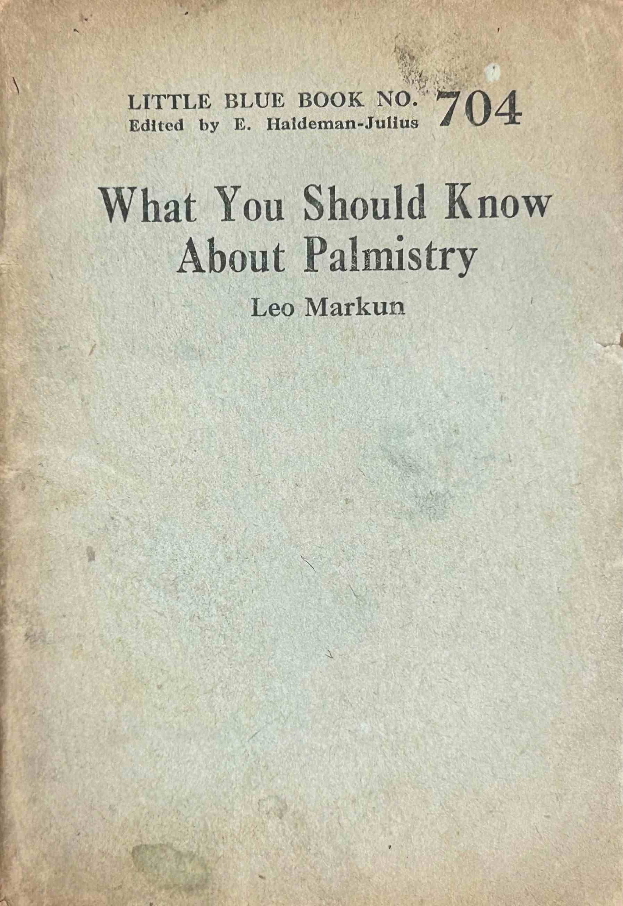
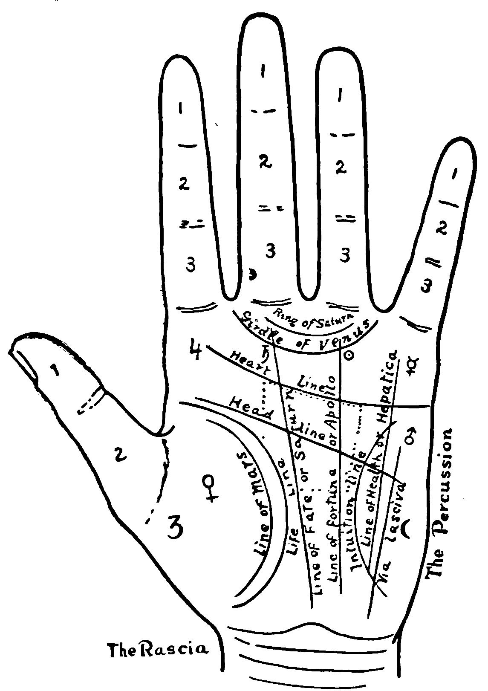

[Pg 1]
LITTLE BLUE BOOK NO. 704
Edited by E. Haldeman-Julius
What You Should Know
About Palmistry
Leo Markun
HALDEMAN-JULIUS PUBLICATIONS
GIRARD, KANSAS
[Pg 2]
Copyright, 1927,
Haldeman-Julius Company.
PRINTED IN THE UNITED STATES OF AMERICA
[Pg 3]
WHAT YOU SHOULD KNOW ABOUT PALMISTRY
INTRODUCTION
Individual differences in the formation of the human hand are so great that they are used for purposes of identification. Specifically, it is the tips of the fingers which are made to imprint their distinctive marks. It was noticed many centuries ago, however, that the shape of the hand and the form of the folds which run across it are not exactly the same in people of the same race or even in close relatives. Neither are all faces or all heads or all bodies identical, of course. Physiognomy, the study of character from the face, is undoubtedly of very ancient origin, although we sometimes think of Johannes Kaspar Lavater, Goethe’s friend, as its originator. Phrenology, the attempt to study the mind from the formation of the skull, arose or at least became important in the system worked out by Gall not much more than a century ago.
Before there was much interest in the question of the origin of individuality and the meaning of variation, our primitive ancestors sought to find indications of future events. We need not consider at length the methods which they employed. They are outlined in my Little Blue Books dealing with fortune telling and astrology. Before there could be any astrology, however, a certain amount of [Pg 4]astronomical knowledge was necessary. Simpler methods of prognostication were first used. The Chaldean priests who gazed at the stars were surely several degrees above the primitive.
Our word palmistry (probably from the Middle English and the Old French words paume and maistrie, meaning therefore mastery or skill with regard to the palm of the hand) has really now two separate connotations. It includes chirognomy, or the reading of character from the hand, which is allied with phrenology and physiognomy and sometimes combined with them by the modern charlatans who call themselves “mentologists” or “characterologists.” It also embraces chiromancy or the foretelling of individual fortunes from the appearance of the hand.
We associate chiromancy chiefly with the gypsies, who have probably brought this “art” with them from India. It is still in great favor in India, as also in Egypt and Syria. Many of the great men of classical Greece believed in the possibility of reading future events in the lines of the hand. In their country, the chiromantic tradition had existed at least from Homeric times. We are told that palmistry, chiefly for the purpose of divination, is some five thousand years old in China. The Chinese have also been interested in podoscopy, the study of the foot and especially the compressed foot of the female, for the same purpose.
For the medieval physiologists, palmistry was bound up with astrology and all of the magical arts. “He sealeth up the hand of [Pg 5]every man: that all men may know his work” (Job: 37: 7), is one of the Biblical texts which were supposed to justify chiromancy. Since both the hands of the individual and the stars which had been dominant at the moment of his conception were supposed to show his fate, parts of the hand were given astrological names and held to be ruled by the various planets.
The softness or hardness, dryness or moistness of the palm was considered to indicate which of the four humors—blood, phlegm, choler and melancholy—was most prevalent in the body, and therefore to show which of the four temperaments the subject possessed. The general shape of the hand, the flexion-folds of skin (the lines), and the muscular projections or mounts were taken to show something about character and a great deal about the future.
The material of palmistry belongs chiefly to very old traditions, and some of it dates from the earliest Indian culture of which we have any record. The arrangement found in modern books and many of the teachings, however, originated with two men, Hartlieb in the fifteenth century and d’Arpentigny in the middle of the nineteenth.
We have no good reason to suppose that the formation of the hand or of any other part of the human body can tell us anything about character. This sort of notion is common enough in the beginnings of science. A few simple rules are supposed to unlock all mysteries. In the Christian writers, the theory is that God made a regular and very orderly world. Moreover, authority was taken as the [Pg 6]guide. If Aristotle approved palmistry; if Albertus Magnus, who claimed to make careful investigations of his own, agreed with the master; if other medieval philosophers and theologians also believed in the prognostic significance of the lines and the mounts; it was, then, a very bold skeptic who dared to suppose that these signs are meaningless or of no known meaning. But the chief opposition to palmistry, as to the other pseudo-sciences, came from the obscurantists, the men who thought that Jehovah is annoyed to find men seeking to solve his mysteries.
People want to know what is going to happen in the future. Is the poor priest to become a bishop? Is the poet to be recognized by his contemporaries, or will monuments be erected to his memory? Will the merchant’s cargoes fall into the hands of pirates? Such questions arise constantly, but intelligent men are now resigned to finding them unanswerable, or capable of receiving an answer after a lapse of time. Yet men have a way of supposing that whatever they eagerly desire actually exists. It is thus that we create heaven and the freedom of the soul and the whole oracular system.
The scientists, assuming that the natural relationships of the future will operate as they do at present and as they appear always to have operated in the past, engage in something which resembles fortune telling. They assure us that a certain comet will appear at a definite time, for instance, or that the earth will be able to support life after a stated period. [Pg 7]If their calculations are correct, that is, based upon an appreciation of all the factors involved, their prophecies are trustworthy. But science is in a constant state of revision, as phenomena are better understood.
In the present state of knowledge, it would be rash to maintain that the form and the markings of the hand will never be useful in the indication of character. Individual physical peculiarities, which must be reflected in the mental and the moral man, may some day be analyzed with the aid of the palm of the hand. Fingers of a particular shape frequently are helpful in playing the piano or the violin or in various arts and crafts. It is possible for the observer who has acquired a little skill to recognize the cigarette-smoker, the chemist, the day-laborer, the housewife, the lady of leisure, and the man who plays baseball (especially at the catching position) a great deal, simply by examining the hand. Palmistry cannot go far beyond this, however, and enjoy the respect of the intelligently educated, until we have much more information than we now possess. The traditional chiromancy and the chirognomy which is largely the work of modern writers are both systems of superstition. They are outlined here as curiosities, not as useful sciences or arts.
THE HANDS AND THE FINGERS
According to d’Arpentigny and the other French palmists, there are seven sorts of hands. These are called elementary, spatulate or active, conic or artistic, square or useful, [Pg 8]knotty or philosophical, pointed or psychic, and mixed. As a matter of fact most hands are somewhat “mixed,” for they do not correspond exactly to any of the types.
The elementary, simple, or ordinary hand has short fingers. The longest finger is usually shorter than the length of the palm. The palm is thick and somewhat rounded. The skin is inclined to be rough. It is supposed to be so naturally, that is, not merely as the result of hard work. Therefore the calloused palm is taken to be less important as an indication of the simple hand than the hard, rough skin of the fingers. This type is supposed to show a lack of educability, and to be found chiefly in unskilled laborers. People with elementary hands are said to be passionate but mentally sluggish.
The spatulate or active hand suggests the spatula, the broad and knifelike instrument used by druggists and painters. The thumb is large and the fingers are usually sensitive, well-developed at the tips. The palm is wide, but often it narrows near the fingers. The hand is seldom flabby, for it indicates the worker, and it is most frequently rather flat. People with spatulate hands are just and orderly, we are told. According to Edward Heron-Allen, “The great pronounced characteristics of this type are: action, movement, energy; and, of course the harder or firmer the hand, the more pronounced will these characteristics be. A man of this type is resolute, self-confident, and desirous of abundance rather than of sufficiency.”
[Pg 9]
The sort of hand which the palmists call conic or artistic is often full and soft. The fingers taper and their points are long. The skin is, in most cases, smooth and without blemishes or callouses. This is the hand of luxury, even voluptuousness, and of weak will. The conic hand indicates artistic power, we are told, especially if the ring finger is long. But, so the tale is told, people with such hands may fail because of lack of application and effort. They are quick-tempered and changeable.
The square or useful hand has flat fingertips. The corners are somewhat angular. The nails are said to be square at the end. The hand is broad and the joints are large. The whole hand is usually of greater than average size. This is frequently found in artisans, it is said, especially in those who have to do with construction. People with useful hands have little interest in the merely artistic things. They want to know, “What’s it good for?” Cheiro says that “they are sincere and true in promise, staunch in friendship, strong in principle, and honest in business. Their greatest fault is that they are inclined to reason by a twelve-inch rule, and disbelieve all they cannot understand.”
The knotty or philosophical hand is an exaggerated conic. The joints of the fingers are knotted, the fingers are unusually long and tapered. Idealists have the joints next to the finger tips well-developed. Materialists have greater knots at the second points. This is the wisdom of M. d’Arpentigny. Scientists, [Pg 10]professors, and theologians have frequently knotty hands. People with philosophical hands are secretive and thoughtful and often vain. They are inclined to be patient and thorough.
The psychic hand is still more definitely pointed and conical, and it is without the conspicuous knots of the philosophical hand. It is smooth and the muscles are soft. Among those with psychic hands are mystics, dreamers, visionaries, and believers in palmistry. Some of them are poets. They are seldom capable of making material progress, and the world considers them failures. Thus the tale is told.
The mixed hand is judged by the type which it most nearly approaches and by the other types which it resembles in some particular. Of the mixed hand in general, Cheiro says, “It is the hand of ideals, of versatility, and generally of changeability of purpose. A man with such a hand is adaptable to both people and circumstances, clever, but erratic in the application of his talents. He will be brilliant in conversation, be the subject science, art, or gossip. Such hands find their greatest scope in work requiring diplomacy and tact.”
The square hand with long, square fingers is said to indicate the development of intellect and will. With knotty points, it points to a capacity for detail. With pointed fingers, it shows a lack of determination and persistence. The square hand with spatulate fingers often characterizes inventors, according to Holmes Whittier Merton.
We are told that large hands are frequently [Pg 11]found in people who enjoy detailed and delicate work. Watchmakers and other artisans who deal with very small objects, we are assured by Oxenford and Alpheus, have always huge palms. As for the men and women with tiny hands, they like to work on skyscrapers and pyramids. People with small hands have a large handwriting, while this is naturally small with people whose hands are large.
Men and women with long fingers are curious, restless, and likely to worry about trifles. Short fingers indicate a tendency to understand objects as a whole rather than as groups of details. People with stubby fingers are supposed to act on impulse, while longer digits show a more reflective nature.
Fingers are measured from the tip to the center of the knuckle at the back of the hand. The palm is measured from the beginning of the second finger to the wrist. A good and well-balanced character is supposed to be shown by the approximate equality of the longest finger and the palm. When the palm is longer than this finger, a lack of interest in the particular and the concrete is indicated.
A good finger, according to the palmists, is one of attractive appearance. It is straight, well-formed, and proportionate to the others in length, width, and thickness. A bad finger is too thick or too thin, too long or too short, twisted or bent. It is sometimes said to indicate nervous disease.
The index finger is supposed to stand under the rule of the planet Jupiter noble and magnanimous. Jupiter confers honor and dignity. [Pg 12]A good index finger means a love of rule or of admiration. Too long an index finger shows an inclination to be tyrannical or perhaps too eager for titles and medals. If the finger of Jupiter is too short, it shows an unwillingness to assume responsibility. If it is crooked, it indicates a lack of honor. Other interpretations will suggest themselves to the person familiar with the pseudo-science of astrology.
The middle finger is dominated by Saturn, the planet which is supposed to make people steady and thoughtful when its aspects are good. A well-balanced middle or second finger is taken by palmists to show prudence. Too long, it indicates an undue absorption in self. Too short, it indicates giddiness and lack of moral stability. Crooked, the second finger shows hysteria.
The third or ring finger is ruled by Apollo. This is the planet which confers a love of beauty and nobility upon the men and women it favors. A good ring finger is said to be indicative of artistic appreciation. A disproportionally long third finger may show a fondness for gambling and speculation, or it may be a sign of an overvaluation of art. It may possibly show a dislike for German brass bands. This is a discovery of my own, which I willingly transmit to posterity. If the ring finger is too short, a lack of interest in art may be read by the examiner. It was a woman with an exceedingly stubby third finger, you know, who found her husband reading “Snappy Stories” and made the classic speech, “My God, have I married a literary man!” A crooked [Pg 13]ring finger is said to be indicative of wrong ideas about art. I suppose this is characteristic of censors, bowdlerizers, and followers of the late Mr. Comstock.
The little finger belongs to Mercury, the planet concerned with speed, business success, thievery, and clubs dedicated to service. If it is straight and well-proportioned, it indicates general capacity, which may lead to success if the other signs are right and the subject happens to be lucky. If the little finger is unusually long, its possessor is sly and cunning, we are told. Too short a fourth finger points to a lack of executive ability. The man whose little finger is crooked is lacking in business tact.
D’Arpentigny insists that the thumb is an important index to individuality. A thumb that appears to bend backward is alleged to show extravagance, love of luxury, and sometimes a lack of honor. The backward-bent thumb often goes with generosity. A short, heavy, blunt thumb is supposed to indicate grossness and sensuality. On the other hand, it may—but “on the other hand” is a phrase which should be used only literally in a learned treatise on palmistry. Well, a thick thumb may show that the possessor is not a magician. Or it may indicate that he is not fond of mixed pickles. It may make it plain that he belongs to the Ancient and Honorable Order of Sons of the Big Stick, especially if he wears the pin of the order on his waistcoat.
The points of the fingers divide them into phalanges. The first phalanx is the one out [Pg 14]of which the nail grows. According to M. Desbarrolles, the first phalanx expresses ideality, the second has to do with intellectuality, and the third is connected with the material world. The first phalanx demands special study. If it is pointed, the possessor is better at imagining things than at carrying them out. If it is shaped like a spatula, he is the he-man (or she is the she-woman) who gets things done, who shoots the villain and brings the money just in time to keep the old homestead from being foreclosed. If the first phalanx is square, the subject is a good reasoner, and knows that palmistry is not the most exact of sciences.
“Long fingers,” I have on the authority of Prof. and Mme. Zancig, “with spatulate tips and long joints, show a love of detail centering in human interest, such as knitting socks for soldiers on foreign service, and teaching in a night-school if the Mercury finger is long as well.” And of reciting Mr. Guest’s poetry, if the Saturn finger is unusually long, I might add.
In the index finger, a long first phalanx is supposed to indicate superstition and an interest in ghosts. If the second phalanx is unusually long, desire for wealth and fame is extreme. If it is the third phalanx which seems to be conspicuously long, the subject is ambitious for power.
In the middle finger, the excessive length of the first phalanx is supposed to show a melancholy temperament. The second phalanx, if it stands out, indicates a love of farming. [Pg 15]But if it is evident that the subject has no agricultural tendencies, this may mean that he likes a poached egg on his hash or that he is fond of riding on a merry-go-round. If the third phalanx is unusually long, he is economical, especially toward the end of the week.
A long first phalanx in the ring finger indicates a love of beautiful objects, especially a fondness for comely members of the opposite sex. An unusually long second phalanx goes with an interest in philosophy, above all, epistemology and ontology. But in exceptional cases it may accompany a liking for dancing or automobile polo. A long third phalanx sometimes is indicative of miserliness.
In the little finger, a fairly long first phalanx shows fluency of language. If the phalanx is conspicuously lengthy, the subject may sometimes fail to tell the truth. If we could measure the length in George Washington’s hand, perhaps we should be able to judge the accuracy of the cherry tree story. The second phalanx, if especially long, shows the ability to do well in business. The great length of the third phalanx is supposed to show a certain amount of exhibitionism, made manifest in the display of jewelry and finery.
The palmists, chirologists, or chirosophists have proved to their own complete satisfaction that the first phalanx of the thumb is indicative of the faculty of will, whereas the faculty of logic is located in the second phalanx and constancy is indicated by the third phalanx, also known as the thumb metacarpal. But some of the authorities tell us that the third [Pg 16]phalanx rules the affections and the second governs reason. Well, one system is as good or as bad as the other. The reader may take his choice.
A well-shaped thumb which is rather long shows a good character. The subject does not often get drunk, beats his wife not over fifty times a year, and never drives his automobile at a higher rate than sixty-five miles an hour in any crowded city. But if the first phalanx is unusually thick, he may go up to a hundred miles an hour, especially if the lines of the hand and the motor in his car permit this.
The middle phalanx is normally a third of the total measurement of the finger in length, or a little less. The first phalanx is somewhat shorter, and the third phalanx is about half again as long as the second one. The phalanges are considered long when they occupy considerably more than these proportions.
If the index finger is inclined toward the thumb, there is considerable desire for independence. If it leans toward Saturn’s middle finger, morbid pride results. If the second finger is bent in the direction of the index finger, it betokens a fear of portents and a tendency to be gloomily superstitious. If it is pointed in the other direction, there is more imagination and less sickly brooding, if the ring finger is inclined toward the middle finger, the subject is excessively vain and egotistical. If it leans toward the little finger, there is a tendency toward commercialism in art. Thus the palmists tell their tale. If the little finger is [Pg 17]bent in the direction of the ring finger, there is a union of scientific or philosophical and artistic thinking.
A large stretch between the index finger and the thumb indicates or gives generosity. It is not entirely clear whether the gap between the fingers makes money slip out or the generosity somehow widens the space. Between the index and the middle fingers, a large stretch shows independence of thought. A gap between the middle and the ring fingers is indicative of indifference to circumstances. Vagabonds are supposed to show this clearly. Between the ring and the fourth finger, a stretch shows independence of action and indifference to convention. If the fingers stretch apart naturally, there is a strong love of freedom. But the man or woman whose fingers tend to remain close together is bound by custom and conventionality. This is the story that the wise palmists tell us.
Straight lines on the phalanges are supposed to indicate success, while transverse lines presage obstacles. A deep line running up the second and third phalanges of the first finger are taken to signify a special ambition or hobby. Transverse lines on the phalanx next to the palm show money by inheritance, we are told.
In the middle finger, a straight line running all the way up shows military glory. If the subject never enters the navy, the army, or the Prohibition forces, such a line may show an important office in a lodge or it may be [Pg 18]indicative of a spot on the clothing from eating a sardine sandwich without due precautions. Two parallel lines indicate mining success or the ability to open a bottle of stuffed olives.
A straight line up the ring finger indicates marked success of some sort. Just what the nature of the victory will be must be determined from other considerations. It may be learning to skate, receiving an invitation to a party, finding that the home-made beer has not yet exploded, discovering gold, or being able to get a seat in the subway during the rush hour. A semicircle on the third phalanx is a certain indication of misfortune. Unwelcome guests, a funeral, a hole in the table caused by Junior’s playful use of his Christmas box of tools, and a run in one’s best pair of chiffon stockings are some of the possibilities. On the little finger, irregular lines on the third phalanx show deception. A husband with such lines should have his trousers carefully searched after he returns from a poker game. He has won at least $5.67—or, if these lines are nearly parallel, $1.76—more than he admits. A circle or semicircle on the third phalanx points out a thief. It is too bad that our police officers have such a superficial knowledge of chirognomy. It would do away with the “third degree” and eliminate all possibilities of the miscarriage of justice. Three lines running straight up the finger show an interest in astrology, phrenology, palmistry, crystal-gazing, spiritualism, Christian Science, the electronic reactions of Abrams, physiognomy, and New Thought. A single line shows success in science [Pg 19]or mechanics. I have heard of a man with such a line who succeeded in opening a pound tin can of tobacco without cutting his fingers. A crooked line running across the third phalanx with the shape of a furrow shows a willingness to run away from superior force. Many small lines on the phalanges show delicate health, unless the subject happens to be vigorous, sturdy, and free of all disease.
When the joints bulge perceptibly, the person studied is something of a philosopher. On very hot days, he remarks wisely that it will presently be too cold for comfort. Or if the subject is a woman, she may find the clouds that are attached to all silver linings. Many people with knotty hands are pessimists, although it is true that some, who enter the undertaking business and become presidents of Rotary Clubs, are able to see the sunny side of things. The development of the first joint (the one between the first and second phalanges) indicates a rationalizing mind. The subject knows that it is unlucky for thirteen people to dine together, and can give six or seven good reasons why this is so. However, some people with this knot—like some whose fingers are smooth at this point—are skeptical about accepted doctrines in science, philosophy, history, cookery, and the fine arts. A few of them have been known to say that there may not be so much in palmistry as the chirosophists claim. The upper joints, when well-developed, show a large amount of talent. But what sort of special skill this may be and how well it is employed depend upon some other factors. People [Pg 20]whose fingers are knotty at these joints are fond of neatness, cleanliness, and order. If their palms are soft, they make other people do the cleaning and the arranging. If their palms are hard—here the chirognomists seem not to be utterly unreasonable—it is possible that they make use of broom and brush themselves. People whose second joints bulge out are likely to bathe at least once a week, especially if they have suitable hygienic facilities at home. Some of them go to church regularly, but others do not, because of indifference or laziness.
The members of the Chirological Society of London once called a special meeting to find out why no special qualities had ever been attributed to knottiness of the knuckles. They decided, after a hot discussion, that the bulge of the knuckle is the “knot of domestic order.” Housewives with well-developed joints here do not permit their husbands to come in until after they have wiped the mud off their boots.
Men and women with smooth fingers are not likely to be guided by reason, we are told. Passion, intuition, and impulse rule them. Some of them are poets, many of them are ministers of religion, and some are stenographers. People with such hands should be warned to look up hard words in the dictionary and not to trust to their own memory.
Even the shape of the nails has a meaning for the palmist. A normal nail occupies about half of the first phalanx. Nails which are short or small are said to indicate a tendency [Pg 21]to diseases of the heart. Personally I should prefer to have a physician examine the organ in question if there were any question of an organic disease, but I suppose this is merely an idiosyncrasy on my part. It is so much less trouble to look at the finger-nails. Short nails which are curved and fluted are indicative of throat-trouble. Exceedingly long and curved nails show a tendency to bronchitis, pneumonia, pleurisy, consumption, halitosis, and diphtheria. “Large nails feel more lasting anger than small ones,” is the wisdom which Ina Oxenford and A. Alpheus collaborated to enunciate. I suppose it is angry nails which scratch women’s faces when they have made other members of their sex jealous. I should say that large nails are more dangerous than small ones, at any rate.
Bright red nails are supposed to indicate a hot temper and a lack of self-control. But men and women with pink nails are often more hasty. When the nails are white, selfishness, sullenness, a calm temper, or a dislike for kippered herring may be inferred. A bluish tint may be the means of diagnosing heart trouble, and a yellow shade may point to jaundice. I am not a physician, but I suspect that the last two indications may actually be of some slight diagnostic value. It is just the tiny touches of truth, though, which are dangerous in the pseudo-sciences, for they make uncritical people take the systems at their face value.
Thick fingers are believed by the palmists—or perhaps we had better say, are claimed by [Pg 22]the palmists—to show a liking for ease and luxury. No doubt it is important to distinguish between those which are thick-boned and those which are soft and flabby. Hands which open and close stiffly and with seeming reluctance are said to show determination or even stubbornness.
If the first phalanx of the thumb is long, firm, and spatulate, the will is strong and independent. But if it tapers to a soft point, the subject is easily influenced by others. So the chirognomists tell their story. If this first phalanx is weak and short, it shows feebleness of will and inability to decide upon an action. A heavy, blunt tip is said to be indicative of great obstinacy. A flexible thumb which bends back is supposed to show extravagance.
The second phalanx is the seat of logic. Long, firm, and well-developed, it indicates the ability to see all sides of a question, to consider matters in their logical relations. Why it should, I do not know, but this is the tale that the chirosophists tell. A large second phalanx in conjunction with a small phalanx of will makes the Hamlets, the people who consider their problems so long that it is too late to solve them when they have finally decided upon courses of action. If the thumb rounds away and narrows at the middle, the subject is somewhat narrow-minded. But Cheiro says that it indicates tact, and it is barely possible that it points to a fondness for green hosiery. This has not been fully proved, to be sure.
The third phalanx, according to some writers, has to do with love. This is really part of the [Pg 23]palm of the hand, and we shall deal later with the Mount of Venus, which includes part of the region. If the phalanx is long, the passions are likely to be spiritualized, idealized, sublimated, freed of their earthliness, and made ethereal. If they are short, they are sensual, sensuous, fleshly, and genuine.
The first or index finger is sometimes stated to be that which controls and makes manifest the intellectual powers. If it is long and well-shaped, we are told that it shows a longing for power. The ability to realize the ambition depends upon other signs. If it is longer than the second finger, the subject is selfish and arrogant.
The first phalanx is indicative of the senses or of intuition or of a willingness to wear a brown derby hat. With very smooth fingers, a long first phalanx means mysticism, poetry, drunkenness, or the making of speeches at public dinners. The first knot points out religious skeptics. The second phalanx is related to the phrenological faculties of eventuality and educability.
The second or middle finger has been connected with association, affection, and circumstances. If it is unusually firm, long, and thick, the subject may feel himself to be in the clutch of the Fates, unable to rule his own destiny. A typical instance is that of the husband whose wife tells him at what hour he must go to bed, what sort of umbrella he is to carry, how much he is to eat, and what company he is to keep. A strong middle finger is indicative [Pg 24]of weakness, then, and its possessor is almost certain to be a very morose person. If he happens to be gay and lively, even successful, this is because he has counteracting signs elsewhere on his hand, or perhaps on his face or his cranium.
If the first phalanx is long, the individual submits to the fell grip of circumstance. He lets the tides and the winds draw them whither they will. If he must wear a pink cravat with purple polka dots, it is the will of the gods. He does not venture to protest. The second phalanx, when it rules, makes, according to one authority, for an interest in the occult sciences. According to another, it shows mechanical or agricultural ability. Perhaps it indicates a natural capacity for solving cross-word puzzles. A long third phalanx is the sign of acquisitiveness or social organization, as the reader may prefer to believe. A strong second finger sometimes shows a tendency to rheumatism or pyorrhea. Some people with large middle fingers get cavities in their teeth, in which case they may experience pain.
If the third finger is long and the first phalanx happens to be prominent and spatulate, artistry is indicated. The subject may be a painter, a poet, an expert at coming home after three in the morning without waking up his wife, a good cook, an actor, a sculptor, or a bootblack. But if the finger is long and the second phalanx is well-developed, the individual is supposed to be fond of gambling. As Merton says, this is the phalanx of industry. I suppose it shows the man who gets rich by speculating [Pg 25]in Wall Street or by cornering the wheat market, especially if this happens to be the case.
The little finger is that of expression, action, or of the use of kiss-proof lipstick. When it is very large, it makes for an excessive use of cosmetics or for various forms of dishonesty. If it is unusually small, the subject finds it hard to get ahead in the world. But we must keep in mind the fact that there are many other signs for the chirognomist to consider, and he can always explain why a man is successful or unsuccessful, interested in law or in plumbing.
The pointed formation of the tip is supposed to show tact and diplomacy or sometimes cunning and a disregard for fair play. Fluency goes with the good development of the first phalanx. A square tip shows the ability to teach or a tendency to meddle with other people’s affairs. Whereas the first phalanx offers an indication of the capacity for oral language, the second phalanx is long in writers. The third section rules worldly wisdom, adventure, and movement. So tell the palmists their tale.
People whose hands have narrow palms are supposed to be conventional, cheerful, plucky, and imaginative. They like to see photoplays with happy endings, and they are fond of vaudeville and burlesque shows. Unless they are musical, they very seldom attend recitals and concerts. A square palm shows a love of fresh air, unless perhaps the line of carbon [Pg 26]dioxide gas is well-developed. When the palm is hard, square, and flat, the subject enjoys playing golf or watching baseball games. In some cases, the hardness of the palm shows that an individual is accustomed to taking care of a furnace.
The hollow palm, alas, indicates a weak will, a lack of power to take advantage of opportunities, sometimes listlessness and undue sensitivity. But dogs and even cats have been known to exhibit a liking for hollow-palmed people, especially when they are generous with bones and cream and catnip. As everybody knows, a man of whom animals are fond must possess some of the virtues. Perhaps such a man has never poisoned his mother or taken the Lord’s name in vain. But, if he has a hollow palm, this may be because of lack of energy. He must have a strong leader—one with a flat palm and preferably with red hair.
The palm which is hard, flat, and without flabbiness is characteristic of the man of action. The subject may not act wisely, but he will do something. It is women with such palms who discourage the flirt by slapping his face or pulling him to the police station. It is obvious that amorous young men should examine the hands of all the young women upon whom they have designs before they proceed farther.
Ernest Dowson expresses his interest in feminine palms, although he does not directly proclaim himself a palmist:
[Pg 27]
Kissing the hands, it is evident, shows plainly if they are dry or moist, warm or cold. It is important for the lover to know if the palms are soft and flabby. A woman with such hands is not likely to take in washing to support her husband. Rather she will expect him to earn enough to provide her with three meals a day, including fried chicken or roast lamb every Sunday. Thick hands and fingers with a firm palm are especially important indications of interest in food.
According to Edward Heron-Allen, “The soft hand has more poetry in its composition than the hard. Thus, the artist with hard hands will paint things real and actual rather than ideal, and his pictures will be more active and manly than those of a softer-handed artist, who will paint the images of his fancy, and whose work will show greater soul, greater diversity, and more fantasy.”
Certain deductions may validly be made from the hardness of the hand. The man who is not clothed like a laborer, but who has a calloused palm may possibly have risen from the ranks. The palmist watches his manner and takes note of his taste in dress for indications of the “self-made man.” Or the hands may be horny from rubbing against golf clubs or tennis rackets. The chirosopher, if he understands [Pg 28]human nature, is often capable of shrewd and accurate guesses.
Soft wrinkles on the hand are supposed to show impressionability and uprightness of soul. Of course it is difficult to tell just what is meant by an upright soul—I really was unaware, until I took up the study of palmistry, that the soul has dimensions—and perhaps this is not incompatible with impressionability. As for wrinkles on a hard hand, they are indicative of pugnacity. The subject is likely to be irritating and a little cruel, we are told, especially if the nails are cut short. What wonders science has presented! And what greater wonders we can find in pseudo-science!
Lines and wrinkles on the back of the hand show sensitivity, benevolence, and possibly a fondness for dill pickles. Men with firm, strong hands sometimes amuse others by dropping from flying machines, going over Niagara Falls in a barrel, playing the clown, dancing a jig, or presenting charades.
A hairy hand in a man is an infallible indication of inconstancy. In a woman, it is a token of cruelty. The man who has just a little hair on the back of his hand is desirous of luxury, but inclined to be prudent. Only rarely does such a person commit burglary or run away with the funds of the bank where he is employed. All men whose hands are slightly hairy and who have been convicted of grand larceny or of other high crimes and misdemeanors have signs of criminality somewhere on their hands. On the thumb, hair [Pg 29]shows ingenuity. On the third phalanges of the fingers, it indicates affection. On all the phalanges of the fingers, it is indicative of a hot temper. Hairlessness on the masculine hand is said to be a bad sign. It betrays effeminacy and cowardice. As a matter of fact, many men who are comparatively hairless and who are without the strong physical traits of their sex are especially belligerent and daring. This is a common reaction to a feeling of inferiority begotten by the effeminate appearance.
White hands which remain colorless in spite of changes in temperature show an intense interest in self, we are told. A red hand is indicative of a sanguine nature. This notion is of medieval origin, going back to the physiology of the four temperaments. The sanguine nature (from the French word sang and the Latin sanguis, meaning blood) is hopeful, according to the old writers, because blood is the dominant humor. Yellow hands betoken a bilious temperament, and blackness shows a melancholy disposition, because of the importance of black bile. This system was worked out before the people of Europe were familiar with the usual cheerfulness of the negro. Pallor shows a phlegmatic spirit, as the palmists tell their story. A wholesome pinkness is the best color, for it indicates cheerfulness, love of justice, and a willingness to be converted by every evangelist who comes to town.
Women with large thumbs are sensible in matters of the affections. They do not fall [Pg 30]in love readily, and they prefer millionaires to poor philosophers. They are usually willing to accept any ardent lover who is handsome, young, cheerful, clever, audacious, and well supplied with worldly goods, however. Such women are seldom flirtatious or jealous, we are told. These facts are remarkable if true.
Women with small thumbs are romantic, passionate, coquettish, easily made jealous. They make good wives if they are physically attractive, constant, economical, cheerful, and intelligent. They like to be kissed and embraced by their husbands; also, if they are unchaste, they are willing to be hugged by others.
“A little, rosy, soft, smooth hand,” say Oxenford and Alpheus, “thin but not bony, and with little joints slightly developed, indicates a vivacious and sparkling little woman. To win her you must be bright, clever, witty, spontaneous, amusing in affairs of the grand passion; you must be quick and sparkling, rather than romantic and sentimental, as you must be with the conic-fingered woman.”
Women with square fingers and small thumbs are said to be fond of order and conventionality. They serve their meals at regular hours, they always provide knives and forks, and they wash the dishes or have them washed immediately after the table is cleared. They wear evening gowns when they go to elaborate dinners or weddings, and they make their husbands put on dinner coats if they can. Such women, if their hands are decidedly square, prefer to be married rather than to [Pg 31]have unconventional love affairs. They expect their husbands to be courteous and to walk on the side next to the curb. Great squareness sometimes goes with fussiness and overemphasis upon punctilio.
[Pg 32]

| 1 The First Phalanges. | ☿ The Mount of Mercury. |
| 2 The Second Phalanges. | ♂ The Mount of Mars. |
| 3 The Third Phalanges. | ☾ The Mount of Luna (the Moon). |
| 4 The Mount of Jupiter. | ♀ The Mount of Venus. |
| ♄ The Mount of Saturn. | The Plain of Mars is Within Dotted Lines. |
|---|---|
| ☉ The Mount of Apollo. |
[Pg 33]
THE MOUNTS
Palmists count on the hand seven muscular projections which are known as mounts. The Mount of Jupiter is at the base of the index finger, which, as we have seen, is supposed to be ruled by the planet of Jupiter. The Mount of Saturn lies below the middle finger. The Mount of Apollo is at the base of the ring finger, and the Mount of Mercury lies next to the little finger. The Mount of Venus adjoins the thumb. The Mount of the Moon or Luna is on the side of the hand opposite the Mount of Venus. The Mount of Mars between the Hill of Luna and the Mount of Mercury. Mention is sometimes made of a second Mount of Mars, under the thumb and below the Mount of Venus.
In a firm hand, the mounts do not rise sharply above the level of the hand, and they are not especially prominent. They are likely to be more distinct in a soft and flabby hand. A good mount, according to the chirosophists, should not be directly beneath a finger but rather between two of them. It should be firm to the touch and developed evenly. A mount is bad when it takes up too much or too little space, is entirely absent, or is inclined to flabbiness.
The height of the mounts is carefully considered. If they are all unusually high, the subject is supposed to be lazy and inactive. If they are low, the hand is considered energetic. The development of the mounts next to the [Pg 34]fingers above that of the lower hills is said to show that the intellectual nature is predominant. When the lower mounts are excessively high, we are told that the passions are more important than reason. This is especially true if Luna and Mars almost come together. The mount which is highest indicates the qualities which predominate because of the planet which rules it. The reader is referred to my Little Blue Book on astrology for an account of the influence of the various planets and for the meaning of the signs used in some palmistical charts.
The equality of the mounts may point out a character which is developed evenly, without any great irregularity or lack of harmony. The great excess of a mount may be a particularly bad sign. It may even show madness in the direction indicated by the nature of the hill. A mount which is not high but which is covered with many little lines is read as though it stood up far above the level of the hand. A single line upon a mount is supposed to be a good indication, whereas two or three may bring misfortune.
Lines placed crosswise upon a mount, especially if they actually cross, are taken to indicate obstacles and perhaps misfortune in the field where the planet of the hill is dominant. They must be considered in relation to the development of the long lines of the hand and to the general shape of the palm and the fingers.
Mount Jupiter is sometimes known as the social hill. Its most important characteristic [Pg 35]is pride, unless perhaps it is religion, ambition, honor, gaiety, a love of nature, or agricultural ability. Such a variety of possible interpretations permits the examiner of the palm to use his own judgment. We are told that the Hill of Jupiter is strong in public speakers and entertainers. When this region is excessively developed, it is supposed to show vanity, selfishness, arrogance, tyranny, extravagant ostentation and, if the fingers are particularly pointed, superstition.
A single line upon this hill is a sign of success already attained or presently to come. A large number of confused lines show an intense struggle to attain one’s heart’s desire, never fully realized. Crossed lines on the Mount of Jupiter indicate unchastity. A proud man should never marry a woman with these marks. Thus, tell the palmists, the chirosophers, the chirognomists, and the chiromancers their tale.
Crossed lines should not be confused with a cross, very short indentations which intersect about at the middle. The cross forecasts a happy marriage. If there is a star as well as a cross, the alliance will be very fortunate, for it will bring wealth in addition to beauty. But a red, black, or blue dot is an unfortunate token. It makes plain that there will be some sort of loss of honor and dignity. If the subject is the champion coffee-drinker or long distance dancer of the country, his crown will presently be wrested from him.
The absence of Mount Jupiter—and it is not considered to be entirely lacking unless there is a crater or depression in this region—is [Pg 36]taken to show idleness, religious indifference, lack of self-respect, want of dignity, and even vulgarity. A strong Hill of Jupiter in a square hand is supposed to show conventionality and respect for the constituted authorities. With long, smooth fingers, it makes for a love of luxury. Developed between the index and middle fingers, it indicates self-consciousness and a feeling of inferiority.
Mount Saturn, below the middle finger, is never very high. But if it is more elevated than usual, it is interpreted by the palmists as a token of morbidness, fear, love of solitude, sadness, taciturnity, remorse, and asceticism. Saturn’s children are earthy, interested in the products of the soil, especially potatoes, rutabagas and orchids. If they are not farmers, they may be miners or florists; and some of them are priests, smugglers, or dealers in ice cream.
An influential Hill of Saturn takes away the attractive power of the other sex. Hermits are supposed to have the mount unusually high. If the hill is close to the finger, the subject is awkward. He never knows, after dining at a strange house, whether or not he should fold his napkin.
A spot on the mount shows some inevitable evil, the nature of which is to be found in the lines of the hand. A star on Saturn indicates danger of paralysis. If, however, the subject never becomes paralyzed, it becomes evident that the danger is not very great. A single line on the hill tends to show success and good fortune. A confusion of small lines is an unfortunate [Pg 37]indication. So ’tis said. The leaning of the mount toward Apollo—that is, its rising in that direction—shows bad luck, or perhaps a fluctuation of spirits.
As for the absence of the hill, some say that it denotes a vegetative existence, without interest in the spiritual things of life. But one authority declares that it is indicative of an inability to consider matters seriously. “With a well-developed Mount of the Moon,” say Oxenford and Alpheus, “Saturn gives a love of and talent for the occult; and, curiously enough, the subjects are usually frightfully ugly.”
The Hill of Apollo has to do with beauty, especially of a masculine kind. This rises beneath the ring finger. Strongly developed, it makes for an interest in art for art’s sake, a liking for natural loveliness. It confers wealth, genius, and intelligence. People with high Mounts of Apollo are responsive to changes in the weather. They are sometimes affected and inclined to pose.
The subjects of Apollo have often inventive ability, we are told. They may be of hasty temper, but their anger usually disappears in a short time. They are interested in the artistic side of things. If they are religious, they like the pomp and splendor of the Catholic service. If they pay particular attention to food, they delight in artistic arrangement and service. They choose automobiles for the body lines and wives for their loveliness. But they are not passionate lovers, and a beautiful wife is [Pg 38]to them chiefly an object to be admired and displayed.
An excessively high Mount of Apollo means a love of money and extravagant display. Curiosity is a frequent trait in this case, we are told. Artists of various sorts are likely to have Mount Apollo strongly developed. A forked line on Apollo shows a conflict of interests. A triangle is indicative of science applied to art.
Mount Mercury is under the little finger. It is on the percussion side of the hand, the side which husbands bang against the table to show a determined negation, just before they agree that their wives may buy the new spring hats which they eagerly desire. A strong hill indicates hopefulness, eloquence, an interest in antiques, speculation, commercial ability, a preference for Virginia cigarettes, industry, invention, agility, and speed in thought and action.
A good Mount of Mercury, assisted by pointed fingers, makes for brilliant oratory and the ability to sell circus tickets or patent medicines. With square fingers, it makes the preacher who proves logically that there is no death and that he needs to have his salary raised in order to pay his insurance. With spatulate fingers, the subject speaks loudly and forcefully. He is able to sway mobs and to be elected to the state legislature.
Mount Mercury excessively high makes thieves and charlatans. In such individuals, my masters in palmistry say, the fingers are usually long and twisted. The palms are soft and flabby. There are many confused marks on the Hill of Mercury.
[Pg 39]
Lines along the percussion side of the hand are taken to indicate the future course of domestic relations. Horizontal lines show serious affairs of the heart. Each line means a separate love partner. A long and faithful marriage is shown by a single deep line. Islands on the lines show either unchastity or marriage to relatives.
The Hill of Mars is above the Mount of Mercury. It includes three areas, known as the mount proper, the plain of Mars, and the second mount. The first or most important part is near the percussion. Here are read the fighting qualities of the subject. If this and the plain are both high, the subject is pugnacious. A strong mount without lines gives equanimity of temper and resignation to circumstances. If the mount is covered by a great many lines, it shows insolence, fury, and cruelty. So the story is told.
According to another interpreter, lines running across Mars represent enemies. Each one stands for a particular individual, and the amount of harm he can do is made clear by the length and the depth of the lines. Small cross-lines at the percussion make for scandal.
The Hill of Luna or the Moon, which lies between Mars and the wrist, makes for imagination when it is strongly developed. The subjects of the Moon love mysticism, solitude, and silence. If the mount is soft and flabby, dreaminess and an unpractical character are to be inferred. If it is strong, the subject may be fond of voyaging to the distant parts of the world. He may be something of a romancer. [Pg 40]He is not likely to talk well, especially when he is speechless with indignation. He (or she) may make a hasty marriage, afterward deeply regretted.
Lines on the percussion in the district of the Moon show voyages. A star at the end of such a line makes for shipwreck or some other disastrous end to a journey. Many crossing lines on the mount are taken to show that the subject is worried. Or perhaps they refer to nervous complaints and neuralgia. Then again, they may be taken to indicate that the individual under examination is fond of playing marbles or euchre.
The Mount of Venus is the large area at the base of the thumb. It is usually higher than any other of the chirosophical hills. A good mount gives the reading of affection. Excessively developed, sexual desire is strong. If the region is flat, coldness is supposed to characterize the emotional life of the subject.
Venus is supposed to rule poetry, music, painting, and the other arts together with Apollo. Apollo and Jupiter stand for masculine beauty, while Venus—goddess, planet, and hill—rules the loveliness of women. On the lines of the mount, islands stand for lost marriage opportunities. A triangle indicates calculation in affairs of the heart. So the story is told.
The Plain of Mars is the middle part of the hand. If it is high and hard, we are supposed to read great combativeness. If it is hollow, submissiveness is to be inferred. The subject will not fight adverse circumstances or ill [Pg 41]health. Perhaps it really means that the subject objects to the combination of grapefruit and cream for breakfast, or it may presage the loosening of a shoelace while he is marching in a parade.
THE LINES
In chiromancy, the lines of the hand are considered to be of the greatest importance. They are considered good if they are of strong color, neither too thin nor too broad, running without breaks or twists. A line which is broad and pale is interpreted to show excess of some sort. Also pale lines show the phlegmatic temperament, while bright red lines are sanguine, yellow lines are bilious, and extremely dark lines are melancholy. The bad results of a broken line may be partially counteracted if a bridge is formed by an accompanying or “sister” line. The lines are not exactly the same on both hands. It is sometimes said that those on the right hand are the result of time and circumstance, while the markings of the left hand indicate the subject’s original nature.
The Line of Life is supposed to give a definite indication of the number of years an individual will live. Palmists prefer to be somewhat vague about this, though. There is a special difficulty in the fact that the line is seldom of equal length in both hands. The Line of Life starts at the base of the first finger or at the side of the hand below it, and circles around Mount Venus. It is taken to [Pg 42]show the physical condition, breaks representing disease. If the line is broken in both hands at the same point, this gives a clue to the time of death. However, a short Line of Life does not always mean that the subject will die young. If an octogenarian, falling into senile decay, decides to visit a chiromancer, and the charlatan observes that the line stops short at the age of thirteen, it is clearly necessary to find other indications of old age on the hand.
A frayed line, or one which is broken but connected by light lines, is said to make for illness or delicate health. But if there is a thin part at the ending of which there is a spot, death is inferred. If the line starts from the base of the finger rather than from the side of the hand, it is alleged to indicate an ambition which is cherished all the subject’s life.
The Zancigs say that a break in the Line of Life, if it evidently is not indicative of illness, may perhaps show a great change of some sort. Possibly the subject learned that King Cheops Turkish Blend Cigarettes offer more for the money than Picadillies No. 45, or that socks may be kept up with rubber bands if garters are lacking.
But if a man of thirty comes to a palmist and learns that his line of life comes to an end at the ninety-seventh year, he should remember to be especially cautious when he reaches that age. He should not drink more than a pint of red whiskey daily, except upon the advice of a physician. I suppose that predictions of early death were actually harmful in the [Pg 43]days when people were more credulous, and possibly there are dolts who still brood over such prophecies, if they are uttered in a sufficiently solemn tone. Even a physician employed by an insurance company is seldom able to tell within ten or twenty years how long the patient he examines will live. He can make a good guess only if he sees strong indications of a fatal disease. As for astrologers, crystal-gazers, dream-interpreters, soothsayers, and palmists, they may accidently hit upon the truth on occasion. Their failures are forgotten, but their successes are repeated and magnified.
It is unfortunate, we are told, to find the lines of Life, Head, and Heart all joined together. This combination is interpreted as a sign that the subject will probably fail in life because he does not realize the dangers which confront him. How unhappy some people would be, though, if they knew what miseries await them at a future time! We are always counting on the years ahead, expecting them to bring prosperity and happiness. Clever palmists usually manage to find good indications, for these are more generously feed than bad ones.
If the Line of Life branches off somewhere in the middle of its course, sending a line toward the Mount of Luna, this is supposed to forebode death in a foreign land. It stands for travel, according to some high authorities, or, in a flabby hand, for dissipation. Dissipation may mean anything from staying out after nine in the evening and carrying matches in one’s pocket to blasphemy, treason, murder, or even the violation of the Prohibition laws. It is [Pg 44]necessary to make use of rather ambiguous terms in order to gain fame in the pursuit of the mantic arts.
Little lines rising out of the Line of Life are taken to indicate weakness at the time when they appear. As for judging time on the various lines, I find rather vague directions. The lower end of the Life Line may perhaps be taken to show the ninetieth year, and the line divided into ten-year segments which are approximately equal.
An island at the beginning of the Life Line, we are told, signifies a mystery connected with birth. Perhaps the subject was stolen from the cradle and substituted for somebody else. Possibly he is the son of a great monarch or of a splendid courtesan, or of both. The situation demands investigation.
Indentations moving upward from the Line of Life are supposed to be favorable. If they lead to the Mount of Jupiter, they show success in entering high social circles or the attainment of some secret ambition, such as that of carrying a walking stick. A line going up to Mount Saturn indicates that the subject will deposit money in the bank or buy lottery tickets or put a coin in a slot before he dies. This is always a financial line. A line moving up in the direction of Apollo forecasts artistic success—perhaps a reputation for carving roasts expertly. A line to Mercury shows commercial or scientific triumphs. But what sort of success will be attained must be read from the hand as a whole.
Islands along the Line of Life show periods [Pg 45]of illness, we are told. Stars stand for shocks and dots for fevers. These are malarial or typhoid if the spots are black, drunken or erotic or bronchial if the spots are red. A mauve spot along the Line of Life stands for leprosy or a cold, one of terra cotta is to be interpreted as smallpox or a sprained ankle, one of Nile blue means infantile paralysis or constipation, while a dot of henna is a sure sign of falling arches, hay fever, poison ivy, or a twitching in the great toe of the left foot. The hand should be carefully washed with soap and water, however, before these spots are sought.
The Heart Line rises from the percussion and runs below the four upper mounts. Or, as some authorities say, it rises on or near Jupiter. According to the first view, the part of the line near the percussion refers to infancy. According to the second, it has to do with old age. My readers, having paid their money, may proceed to take their choice. The Heart Line is sometimes called the Line of Affections.
A good line is not too broad or pale, neither is it too thick and red. It shows a good disposition, an even temper, and satisfactory health. The best position for the line is close to the fingers. If it is near the Head Line, the line which runs approximately parallel to it, it is supposed to indicate disappointment and unhappiness. If it runs up to the base of the index finger, we are told that it forecasts a constant and romantic love. If several branches come to the finger, such love will be felt for more than one person. Thus tell the chiromancers their tale.
[Pg 46]
A line which ends abruptly in the middle of the Hill of Jupiter shows a love which may be noble and worthy, but which is not purged altogether of interest in the flesh. Ending between the index and the middle fingers, it shows practical affection, without any great storm of passion. If there is a circular branch near Jupiter, the loved person will prove unworthy. If the line rises (or ends) near the middle finger, it shows an affair of the heart without unselfish interest or spiritualization. So the story is told.
A Line of the Heart which is looped is taken as a sign of flirtation and of palpitation of the heart. It is not clear which is the cause and which the effect. Does palpitation of the heart result from flirting? Or flirting from palpitation? Or both from the chained line? Or all three from the astrological condition at the time when the subject was conceived? Or all four from the will of God? Or all five from the weaving of the Fates? Or—but we must not enter too far into this absorbing metaphysical problem.
A bright red line indicates violence in matters of the affections. The subject may perhaps carry off a wife, or he may steal a kiss, or he may be chastised for being “too fresh.” A colorless, broad line, we are told, shows a heartless wretch, capable of marrying a wealthy widow for her money or of betraying hosts of virtuous maidens. This is made especially clear if the Line of the Heart is close to the Line of the Head.
A very thin line running all the way across [Pg 47]the hand is said to be sadistic. The subject may murder, assault, batter, use strong language, or otherwise misbehave. The palmist should immediately report all persons with such lines to the police, unless he has been sworn to secrecy beforehand. But perhaps the things which the chirognomist learns are sacred confidences, like the stories which are poured into the ears of lawyers, physicians, and confessors.
The absence of the Line of the Heart is a very, very unfavorable sign. If the subject does not kill his grandmother or betray the secrets of his mother, he will probably work on Sunday or forget to say his prayers. And I have been told of a young girl without this line who wore skirts so short that her knees were plainly visible when she sat down. In the interests of public morality, this line should be painted on in all cases where it is absent.
Breaks in the Heart Line indicate weakness of the heart or of some other physical organ. A number of small lines crossing it are to be read the same way. Possibly they show a wandering of affections, a tendency to feel drawn toward more than one person of the opposite sex. Or they may be indicative of a dislike for the small pieces of candy which are colloquially known as kisses.
It is an excellent sign if the Line of the Heart divides into three branches below the index finger. The subject will own at least three pairs of shoes at some time in his or her life. If there are more than six such branches, part of them may refer to stockings, mufflers, pipes, corsets, or can-openers. Even a single line in [Pg 48]the direction of the Hill of Jupiter is a favorable indication. It proves that the subject will own at least one pair of shoes. Whether or not the sole will be in good condition must be judged from the development of the thumb—in the case of the right shoe, the left thumb; in the case of the left shoe, the right thumb. The uppers may be judged from the first phalanges of the fingers.
If the Heart Line is without branches, we may infer that the subject is and will remain friendless. If the branches droop, his or her friends will be the cause of sorrow. If they go upward from the line, the friends they represent will be generous, tender, and not averse to lending a dollar or two if approached with proper tact. This quality is indicated by conic first phalanges. Without these, friends are of no great use.
If the line comes up to the base of the middle finger, as we are told, the subject is likely to find all his hopes shattered because of too great an attachment to unworthy friends and ideals. This is likely to be due to religious fanaticism, especially if another line branches off to the index finger.
If the Heart Line is long and unbroken and the first phalanx of the thumb is large, the subject will be a devoted friend. He may perhaps cultivate acquaintances for the purpose of selling them life insurance, but he will never willingly relinquish them so long as he hopes they will prove advantageous to him.
Something like a hole in the line is supposed to show a disillusionment in love or friendship. [Pg 49]Or it may be a symptom of apoplexy. Red or deep spots are to be read as wounds. If they are red and deep enough, they show that the hand itself has been wounded. If there is fresh blood on the hand, this is especially likely, unless the subject has been slaughtering cattle.
A fork in the Heart Line, with both tines about equal, shows fidelity in love. No person will ever come between the forks, we are told, no matter how much disappointment and unhappiness the first love may bring. Squares in the line are interpreted to forecast recoveries from illness. But of course it is also necessary to consider the Line of Life and to examine the heart and lungs before coming to any definite conclusion.
The Line of the Head begins with the Life Line and runs across the hand toward the percussion. In some hands, however, it starts separately, from the Mount of Mars or the Hill of Jupiter. It is considered most favorable when it is clear, of good color, connected with or approaching the Line of Life, and sloping a little toward the Mount of the Moon. A good Line of the Head is supposed to show a clear mind, usually associated with a strong will.
A short, deep line may mark the pedant, absorbed in his own specialty and oblivious to everything else. A long, straight line is indicative of selfishness, unless, of course, there are other signs which show generosity and altruism. If the Head Line is even, the subject has a certain rigor of thought, but he or she may be narrow-minded. A chained line shows mental instability. A double line indicates [Pg 50]versatility, perhaps amounting to a dual personality. This is the story the chirosophists tell.
If the line starts from Jupiter without approaching the Line of Life very closely, the subject is lacking in caution. But a large thumb may go far to correct this. The individual whose line is thus formed is sure to be independent in his views, and he is likely to be talented. He may play the saxophone by ear without regard for the feelings of his neighbors.
If the Head Line crosses the Line of Life, the subject will be usually cautious. Even though wearing a belt and suspenders, he will constantly fear the loss of his trousers. If the person who has crossed lines is of the sex which we do not in polite society associate with bifurcate garments, she will be constantly hitching up her skirts. Such a combination of flexion-folds makes for frequent changes of opinion and for a lack of intellectual harmony with neighbors and relatives.
The Line of the Head causes a love of beautiful things, especially if it slopes gradually in the direction of the upper end of the Hill of the Moon. The subject will be fond of cutting rotogravure pictures out of the Sunday paper and pasting them up on the wall of his bedroom, together with mottoes expressing tender sentiments about home and mother. But if the line bends or slopes toward the center of Mount Luna, we may read dreaminess and more or less innocent eccentricities. Persons with such lines write to the editor of their favorite newspaper or magazine to interpret the symbolism [Pg 51]of the Bible: Jesus stands for either worldly wisdom or love, Judas represents material matter out of tune with the infinite, Adam is the American farmer, and so on.
A small fork in the Head Line makes for diplomacy, whereas a large one causes cunning. But I have not been able to learn how large the fork must be to create a subject too cunning to be a diplomat. If chirognomy were altogether a product of the present day, we should no doubt be provided with precise measuring instruments.
Memory, we are told, depends upon the depth of the Line of the Head. But if the line and the fingers are usually long, there will be an undue interest in trivial details. The subject will be able to say immediately who was the nineteenth vice-president of the United States, and he will remember the exact number of pounds of white rouge produced in France in 1928, as also the precise amount sold in America with French labels.
An island on the Line of the Head forebodes illness. The same thing is said about black spots. If the spot or island is found in the Mars district, or if the Hill of Mars is high, the disease may be scarlet fever or smallpox or the hives. If Jupiter dominates, a sore throat, bronchitis, or pneumonia may be predicted. Saturn causes toothache, and any subject whose mouth presents a flash of gold may safely be told that he has had aching teeth. According to another writer, Saturn’s island indicates an injury to the limbs. Apollo’s evil influence causes disease of the eye, especially if there is [Pg 52]a star at the base of the ring finger. A long island anywhere on the line means mental disease. So the story goes.
Red dots mean wounds, and the sign is confirmed by a cross on the line. No person with such marks will live much longer than a century or so. White points are favorable indications, however, for they show that the subject will make a scientific or artistic discovery or perhaps invention. Perhaps he will find out how to squeeze the last bit of shaving cream from a tube or how to open a jar of mustard without getting any spots on his clothing.
An abnormal slope or bend of the Head Line is taken to mean insanity, especially if it is found in a philosophic, spatulate, or square hand. An uncertainty of the line confirms such a reading. And if the subject is confined in a lunatic asylum, the diagnosis is very likely to be correct.
The Fate Line runs between the middle finger and the wrist. It relates to the career and the accomplishments of the subject. It is sometimes spoken of as the Line of Luck or of Fortune. It is found most strongly developed in philosophical and conic hands. Therefore, we are told, a short line in an ordinary or square hand means as much (or perhaps we should rather say, as little) as a long one in a conic hand.
If the Fate Line begins at the wrist, it denotes early responsibility. The subject started to sell papers when he was five, perhaps, or was compelled to dress himself as soon as he was nine. But if the Head Line and the Heart [Pg 53]Line in the hand are united for a considerable distance, it may be that the responsibilities were felt and yet not assumed. A deep line indicates a monotonous life. If the line wavers, there is much doubt and uncertainty about the career. A sharp break in the line means a period of worry, or else a change of occupation. According to Oxenford and Alpheus, religious conversion is made clear by a break in the Fate Line of the left hand. By all the occult signs, the writer of this little book will soon be writing a life of Christ. But in order to determine whether or not it will be published in this series, it will be necessary to examine the palm and the cranium of Mr. Haldeman-Julius.
If the Fate Line starts from the Hill of Luna, the course of events has been influenced (or will be influenced) by somebody else. Such a line in a woman or in a henpecked husband may mean an early marriage. If it begins at the Line of Life, the family influence is important. Such, at least, is the story which the palmists tell.
If the line is entirely wanting, the subject is the creature of circumstance, permitting himself to drift upon the seaward-flowing river of life. He may become a vagrant, a speculator, a dealer in old clothes, a soldier of fortune, a chauffeur, a perfumer, a barber, a politician, or a pickpocket. But it is also possible that he should become a valet, a steel magnate, an oil king, a rubber in a Turkish bath, a pander, a writer, a physician, a patrolman, a sergeant in the Marine Corps, or a vegetable peddler. A woman without a Line of Fortune may be a [Pg 54]housewife, a prostitute, a nurse, a stenographer, a maid, a factory worker, a milliner, or a teacher. Of course she may enter these callings also if she has the line.
An island on the line betrays conjugal infidelity. The husband who finds it on his hand should hire a duenna and a corps of private detectives to watch his wife. If there is a star close to the island, the unchastity will bring about some great calamity. Perhaps it will be necessary for the cornuted husband to pay alimony to his faithless wife in order that she may support her paramour in the luxury to which he is accustomed.
Lines running parallel to the Fate Line indicate hobbies, avocations, and subsidiary interests. But if it is difficult to tell the Line of Fate and these subsidiary flexion-folds apart, we may infer that the subject is more interested in golf, dominoes, or the collection of old bottles than he is in his business.
The Line of Apollo runs from the ring finger toward the wrist. It is usually rather straight. Sometimes known as the Line of Brilliancy, it shows worldly, especially financial, success. Just what sort of victories the subject will win, precisely what sort of laurels he will wear, must be read from the other lines and from the mounts.
“The type of hand,” says Oxenford and Alpheus, “must in all cases be taken into consideration. A Line of Apollo on a philosophic or extremely pointed hand will mean little, whereas a very short or slightly developed [Pg 55]Apollo Line on a square hand will indicate great success.”
According to the Zancigs, the absence of such a line does not always mean poverty. It may show simply that the subject is careless with small sums of money. For the practicing palmist, the old tradition that the absence of a certain sign indicates anything very definite is rather embarrassing. If a man wears a ring worth a thousand dollars, one cannot very well tell him that the marking of his hand makes it impossible for him to accumulate or to have accumulated or acquired any wealth.
A star on the Line of Brilliance, we are told, is a very fortunate indication. Some sort of success is certain. It may simply be success in getting through life without ever being sent to jail. Many lines branching off from this fold are taken to mean a scattering of talent. An island on the Line of Apollo is supposed to show the loss of a position, because of the plotting of enemies.
A forked line means that money comes in from two or more sources. But if the junction is not very distinct, we are told that the subject has too many interests. He should rather concentrate on a single task. A doubling of the line is supposed to show an increase in wealth. A line from the Hill of Mars running into the line and breaking it is said to indicate that money will be lost to an enemy, or because of his machinations.
The Hepatica or Health Line runs from the base of the little finger toward the wrist. It is frequently absent, in which case a strong constitution [Pg 56]is indicated, according to some authorities. A long, straight, clear line is almost as good as its total absence, we are told. A broken line is supposed to mean digestive trouble or some form of disease. Red at the lower end indicates heart trouble. At the upper end, it shows headache. In the center, red is a sign of fever. Nevertheless, according to a practicing physiognomist and palmist, these symptoms do not always appear—“This author has found its evil signs all absent when there was known heart trouble and disease.” Such is the admission of Holmes Whittier Merton. His book on Descriptive Mentality departs in some respects from the traditional system of palmistry, but I cannot find that it is a whit more scientific or accurate.
A pale white spot upon the line means chronic indigestion, we are informed. A cross shows illness, and a circle is a sign of a wound. Internal illness is shown by islands on the Hepatica. The name of the line (from the Greek word hepar, liver) shows which organ was once supposed to be almost exclusively concerned with digestion. A thick and blunt line indicates illness in old age. A long island near the wrist may mean somnambulism, it is said. Or perhaps it points out that the subject weeps whenever coming close to cut onions. A sister line to the Hepatica is said to show avarice.
The Marriage Lines appear to be somewhat uncertain. Sometimes there is a strong line beginning at the percussion and running parallel to the base of the little finger. There may be several such folds, in which case the deepest or [Pg 57]the longest one is considered most carefully, but the others are also studied.
Recent palmists emphasize the fact that the lines merely indicate tendencies, or that they may stand for love affairs which do not end in marriage. Sometimes they are called Influence Lines, so that an old maid in whom the folds are sharp and long may be told that she has been influenced by some person or persons, not necessarily a husband. For indications of marriage we may examine the Life and Fate Lines as well as a number of Influence Lines crossing Venus. A plain circlet of gold or platinum on a woman’s finger is frequently a sign that she is married. I have not found the fact mentioned in any book on palmistry, but chiromancers and other fortune tellers watch for such clues with very keen eyes.
Tiny lines dropping from the chief Marriage Line are supposed to show illness in the mate. If such a line describes a large semicircle, death is prognosticated. An island in the Line of Marriage shows a period of separation. If the line sends two equal branches toward the palm, divorce is indicated, especially if there is a connecting line to the Hill of Mars. According to other authorities, an island on the line means marriage to a cousin. Or, at the end of the line, the island is taken to represent the death of one of the parties in love or marriage, caused by hereditary illness. Perhaps it shows a sweet tooth, a tendency to write nonsense verse, or a limp in the left leg.
Above the Marriage Line and running into it are to be found the lines traditionally taken to [Pg 58]indicate the children of the subject. If they are broad, clear, and vertical, they show boys. If they are fine, delicate, and somewhat oblique, they represent girls. Long and prominent lines are supposed to show that the offspring will have brilliant careers.
These lines, we are told, should be sought on the hands of women rather than on those of men. But they may be found if the man is fond of children or if it happens that he possesses them. Stars on these little lines stand for illness in the children, crosses represent accidents, and squares stand for narrow escapes. Islands show ill health or, at the end of a line, death.
The Via Lasciva or Cephalic Line, which occurs on some hands as a sister line to the Line of Health, is said to show sexual and emotional intensity. Perhaps injuries to the head are to be found there. Then again, inability to appreciate free verse may be the result of a long, deep line, without any spots. Or it may show a fondness for old Scotch whiskey. But some high authorities find a separate line of Drink, Drugs and Deadly Cigarettes.
Closer to the thumb than the Line of Life and running in the same general direction is the Line of Mars. Like the other folds which are still to be mentioned, this occurs only in some hands. We are told that it is common in the hands of great military commanders. Its ending always shows a love affair, according to one expert. Possibly it means the blowing of soap bubbles or the drinking of grape juice, though.
[Pg 59]
The Line of Intuition is somewhat semicircular, and it is often connected with the Hepatica at both ends. If the fold does not touch the Line of Health, it is taken as an indication of occult power. It makes dreamers, mediums, hypnotists, astrologers, and palmists. An island near the beginning may or may not show second sight.
The Ring of Saturn is a semicircle cutting off half of Mount Saturn, at the base of the middle and ring fingers. It is said either to confer occult powers, of which little advantage is taken, or to bring misfortune. Again my readers are welcome to accept whichever interpretation may please them, or even to consider it an indication that the subject will soon lose a button on his or her winter coat.
The Girdle of Venus is another semicircle found on some hands, running outside the Ring of Saturn. According to Desbarrolles, this shows a tendency to immorality. The Zancigs maintain that he made a mistake because he only examined the hands of French people, with whom sexual delinquencies are frequent. Perhaps, then, it shows a nervous temperament or a love of orchids or a fear of frogs. In the hand of a member of the Anti-Saloon League, it indicates great idealism and the firm belief that bootleggers should be hanged, drawn, and quartered, while their customers should merely be boiled in oil or given a few dozen strokes with the knout.
The Bracelets or Rascia are lines on the wrist below the palm. They are sometimes said to [Pg 60]show the number of years the subject will live. Each fold stands for twenty-five or thirty years, if it is sharply defined. Badly formed lines are supposed to indicate either bad health and a short life or extravagance. If the Bracelet next to the palm in the hand of a woman arches up in the middle, we are told by Cheiro that it shows weakness of the ovary. According to other writers, the looping of the first line means that the subject will make his fortune after struggling hard and long for it.
The area enclosed by the Hepatica and the Lines of Life and the Head is called the Great Triangle. If it is large, it is said to indicate generosity and a broad mind, especially if the outlines of the triangle are clear and straight. A narrow triangle shows individualism, and selfishness is to be inferred in some cases.
SOME APPLICATIONS
Some palmists consider that either hand may be read, with the left giving the more definite indications. Others insist that it is necessary to consider both hands. When the same sign is found in both hands, it is considered more reliable. The left hand is said to show inborn tendencies, while the right hand is supposed to indicate to what extent these have been or will be followed.
A healthy hand is said to be of even texture, not too flabby and perhaps not excessively hard, with lines which are clear and of a clear red color. The nails are without spots or ridges. If the lines are too bright, a tendency to fever [Pg 61]is shown. A confusion of small lines all over the hand is taken to indicate poor health.
There are signs for the various diseases, which have, we are told, been verified in the hospitals. But an examination by a competent physician is the best course to take in case of ill health. I should be reluctant to put down these “certain indications” if I thought that some of my readers might possibly take them at their face value.
Scarlet fever, as the chirognomists tell their story, is shown by a small square on the Line of Life, with an upright cross within it. Typhoid fever is indicated by a similar square with a blue dent or a cross with slanting lines inside. Fine lines striking across each other mean rheumatism, especially if the skin is unusually smooth. Consumption is indicated by a moist skin and curved nails. There are islands in the Head Line. Diseases of the respiratory organs are shown by islands on the Line of the Head below the middle finger. The Head Line or the Via Lasciva is broken or frayed in cases of brain disease. A blue dent means influenza. Circles or dots on the Line of Life indicate eye trouble. Dots on the Line of the Head in the region of Jupiter show deafness. Internal disease is indicated by islands on the Hepatica. Maladies which are inherited are shown by islands on the Line of Life.
According to the position on a line in which such an indication is found, it represents a disorder of the past, the present, or the future. As we have already seen, the fixing of a definite time on the lines is not easy, and there are [Pg 62]some contradictory statements as to the direction in which the folds are to be read. But since palmistry is without value for the study of character, the forecasting of the future, and most other purposes, we need not worry about such difficulties. I think that palmistry is no longer exceedingly profitable for the mountebanks who practice it. There are still credulous people, to be sure, but we can detect a slight feeling of doubt in most of the individuals we find entering a chiromancer’s booth at Coney Island or a county fair.
I do not know to what extent young people actually consult astrologers, palmists, and physiognomists to help them make up their minds as to which calling in life to pursue. Many charlatans who know that their fortune telling ability can often be tested represent that they are able to show tendencies which ought to be followed. Thus, if the hand shows a military career and the gentleman who presents it is a millinery salesman, it is not sufficient for the palmist that the words sound pretty much alike. He will tell the chicken-hearted fellow that he ought to be riding a horse in front of an army. Our modern generals ride in expensive limousines forty or fifty miles behind the front, but that is beside the point.
Some of the English palmists have been ambitious enough not only to describe what a minister’s hand looks like, but also to indicate how the palm of a Methodist churchman differs from that of an Episcopalian. In an encyclopedic book on chirognomy, we should find the [Pg 63]palm type of the rabbi, the sheik, the fakir, the brahmin, the druid, the bonze, the lama, the pope, the canon, the dean, the vicar, the abbot, the mendicant, and the leader of an Ethical Culture group.
Ministers of the Church of England have long fingers and conic hands, we are told, while Methodist clergymen have heavy fingers and square palms. Since the Anglican (or in America, the Episcopalian) Church tends to emphasize ceremony and beauty, the type of hand belonging by palmistic tradition to the artists, slightly modified by the marks of religion, is attributed to the clergymen of the sect. But Methodist churchmen are supposed to care less for beauty.
The signs belonging to the occupations arise in part out of astrological and mythical notions. Thus, Mars is the god and the planet of war. It is for this reason that a soldier is supposed to have a high Plain of Mars and a strong Mars Hill. His palm is square and hard, for this seems to be the type suitable for action.
We need not analyze the symbolism of the other professional signs. Luna stands for travel, for which reason a sailor has a well-formed Hill of the Moon, for example. The curious reader may pursue the subject with the aid of books on astrology, but it is of no practical value, except that it makes clear the flimsiness of the occult systems.
Some books of palmistry give gastronomical tables, showing what foods people with various hand types are supposed to prefer. Men and women who have the finger and the mount of [Pg 64]Jupiter most strongly developed, and who are therefore considered to be of jovial temperament, are credited with liking turtle soup, trout, turbot, mace, nutmeg, beef, mutton, venison, turkey, duck, rich puddings, parsnips, French beans, Stilton cheese, pears, plums, figs, olives, mulberries, raspberries, walnuts, stout, port, punch, cherry brandy, sloe gin, and coffee. The list is rather attractive, especially toward the end. But it seems to me that people should seek the good things of life without worrying too much about the lines on their palms. Keep the hands reasonably clean, use them for helping yourself to bread but not to stick into soup in order to test the temperature, and stay away from the palmists.
Transcriber’s Note:
Inconsistencies in hyphenation have been standardized.
Minor punctuation errors have been changed without notice.
Spelling was retained as in the original except for the following changes:
| Page 12: “My God. have I married” | to | “My God, have I married” |
| Page 14: “According to M. Desbarroles” | to | “According to M. Desbarrolles” |
| Page 21: “fluted are indicative fo” | to | “fluted are indicative of” |
| Page 25: “and diplomacy or some times” | to | “and diplomacy or sometimes” |
| Page 41: “on both hands. Iit” | to | “on both hands. It” |
| Page 42: “does not always means” | to | “does not always mean” |
| Page 45: “readers, having paid thteir” | to | “readers, having paid their” |
| Page 51: “of white rouge producd” | to | “of white rouge produced” |